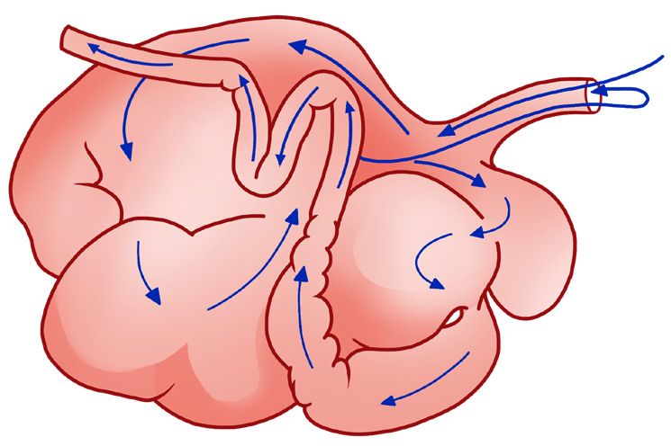

51
Student’s Book - Form Two

Biology for Secondary Schools
returned into the mouth. Examples of ruminant animals are goats, cattle, sheep, antelopes, and giraffes.
The digestive system of ruminants is
divided into different parts which are
mouth, pharynx, oesophagus, rumen,
reticulum, omasum, abomasum, duodenum, ileum, colon, caecum, appendix, rectum, and anus. The
associated organs and glands are the
salivary glands, liver, pancreas, and
gall bladder. Their stomach is divided
into four compartments that are rumen,
reticulum, omasum, and abomasum,
as shown in Figure 2.7. The first three
sections are known as ‘false stomach’
because they are merely an extension of
the oesophagus and they do not secrete
the gastric juice. The fourth section,
abomasum, is the only true stomach of
the ruminants because it secretes gastric
juice.
Digestion in a ruminant starts in the mouth when plant material is eaten and partly chewed by the teeth. The partly chewed food is mixed with saliva from the salivary glands and then rolled into a bolus by the tongue. This partly chewed and rolled food is then swallowed through the oesophagus.
It then enters the rumen where it is temporarily stored. The food stored in
the rumen is coarse and greenish. The rumen is the largest part of the three chambers of the ruminant stomach.
Hence, it can store a large amount of food at a time. In the rumen, there are bacteria that act upon the swallowed food and digest the cellulose contained in the plant materials. Figure 2.8 shows the internal structure of the ruminant’s digestive system.

Rumen
Small intestine
Direction of food
Oesophagus
Reticulum
Abomasum
Omasum
Figure 2.7: Parts of the ruminant stomach
08/04/2026 10:18:15